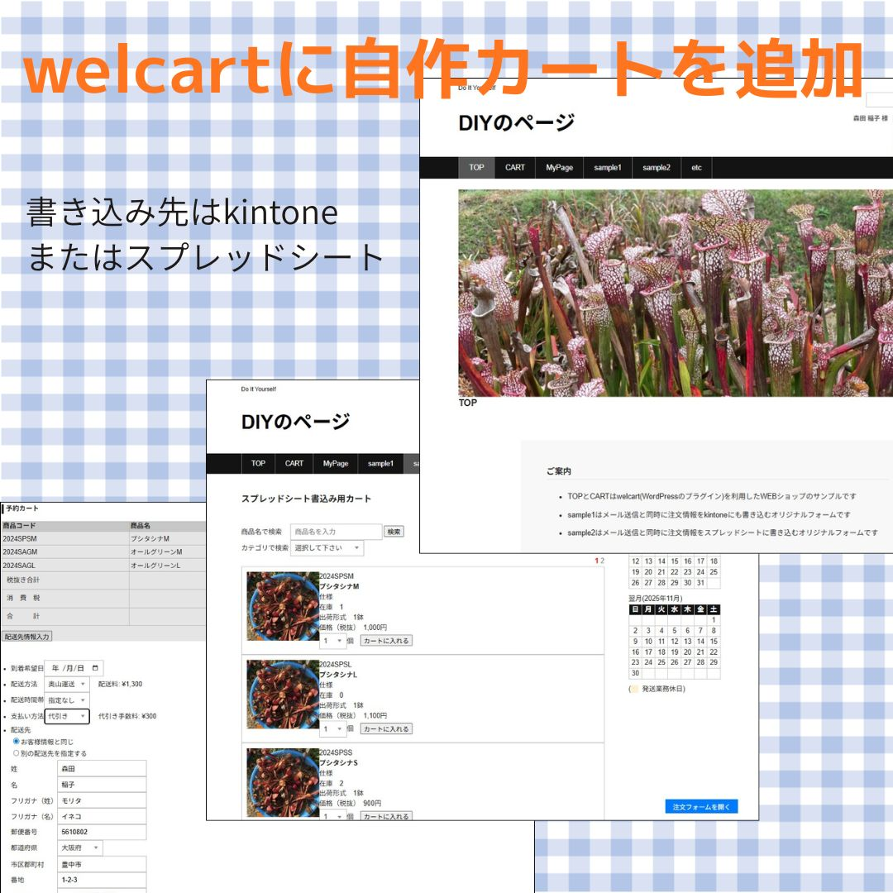
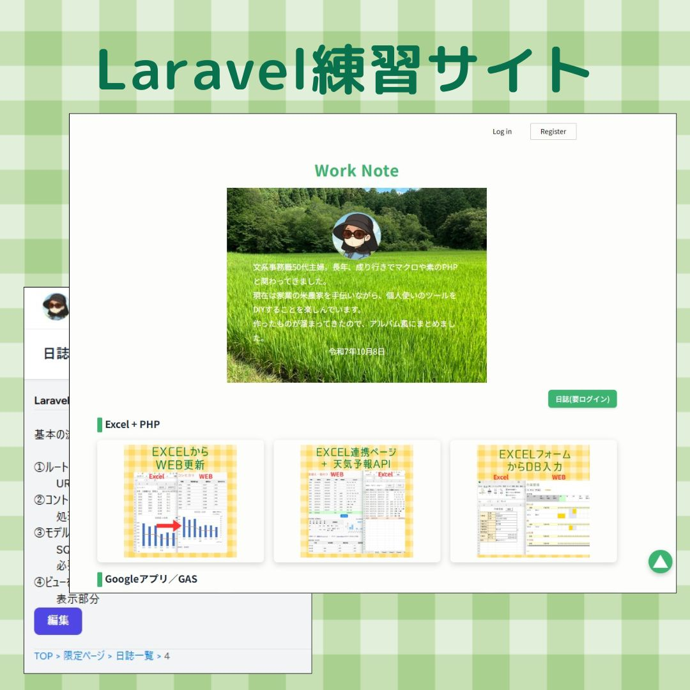

|
文系事務職50代主婦。成り行きで長年、マクロや素のPHPで業務用ツールを作ってきました。 現在は家業の米農家を手伝いながら、個人使いのツールをDIYすることを楽しんでいます。 作ったものが溜まってきたのでアルバム風にまとめてみました（CSSも使わないと忘れてしまうし）。 チーム開発の経験が無いので、GitHubやLaravelがどんなものかも、少しずつ試しています。 | |
| 名 前 | 森田稲子 |
| 所 在 | 東海地方 |
Excel + PHP
入力や計算は手軽なExcelで。スマホでも見られるようにデータとグラフをWEBに送れるようにしました。
Excelからデータを更新するページに天気予報APIをつけました。
Excelのフォームから送信してDBに書込みした例。
Googleアプリ／GAS
PCを立ち上げるのが面倒で、LINEから日記（スプレッドシート）に書込めるようにしました。
WEBフォームやGoogleフォームからカレンダー書込みしてLINE通知なんてこともできるようです。
スプレッドシートはHTMLのページも作れるようです。Googleフォームより凝ったページが欲しい時に。
文字起こしはGoogleの機能を利用するのが手軽だったためスプレッドシートに組み込みました。 HuggingFace のAI翻訳も試しましたが無料枠が一杯になってしまい…
PCでQRコードだけが表示され、「このURLにアクセスしたいのにリンクがない」という状況にしばしば出くわすので作りました
普段使いのツール
著作権を気にせず使える背景画像が欲しくて作りました。
ファイル名を一括変更したい、名前を忘れたファイルを探したいなどの際に。
スマホを持っていない家族が家族LINEに参加できず寂しそうだったので作りました。
テストなど
スクレイピングを体験してみたかったのと、Excelでも出来るか気になったので

WordPress（welcart）にオリジナルフォームを付けてみました。 書き込み先はkintoneとスプレッドシートの2種類（テスト）。
WordPress（welcart）にオリジナルフォームを付けてみました。 書き込み先はkintoneとスプレッドシートの2種類（テスト）。
手書きPHPの買い物カート

以前挫折したLaravelに再挑戦
以前挫折したLaravelに再挑戦